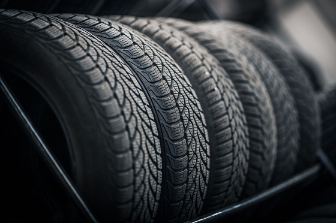
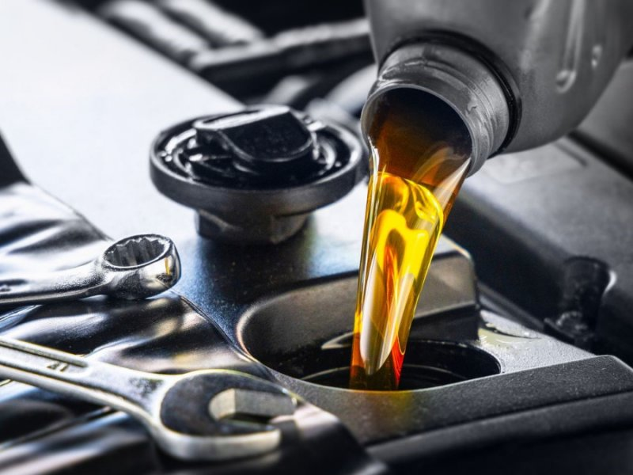
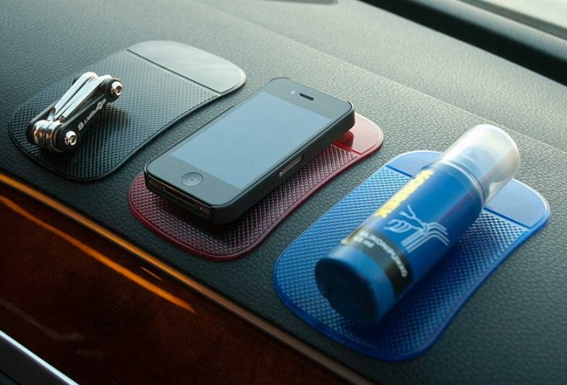

Шини для авто та мотоциклів
Великий вибір літніх, зимових та всесезонних шин для легкових авто та мотоциклів. Гарантія якості від провідних виробників.

Моторні масла та технічні рідини
Асортимент синтетичних, напівсинтетичних та мінеральних масел для авто та мотоциклів. Оберіть підходящу рідину для свого двигуна!

Аксесуари для авто та мото
Сучасні навігатори, відеореєстратори, чохли та інші аксесуари, що зроблять вашу подорож комфортнішою.